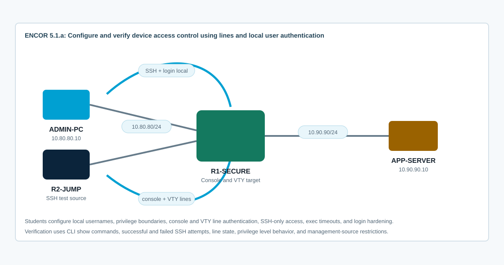

Overview
This lab targets ENCOR 5.1.a: configure and verify device access control using lines and local user authentication. You will build a secure local-user access model for console and VTY lines without using AAA, then verify successful and failed access from multiple management sources.
CCNP-level value is in understanding exactly which line is authenticating the user, which local username is used, what privilege level is granted, what transport is allowed, and how failed logins are handled. You will also distinguish local line authentication from AAA authentication so the boundary between 5.1.a and later AAA topics is clear.
Topology
R1-SECURE is the device you will harden. R2-JUMP and ADMIN-PC are management sources on the 10.80.80.0/24 subnet. APP-SERVER provides a data-plane destination so you can prove management hardening does not break normal forwarding. The starting CML topology has addressing only; local users, line authentication, SSH keys, and VTY restrictions are intentionally absent.

Task 1: Baseline Access and Forwarding State
Identify the current access posture before changing anything. You should know whether a line has no login, line-password login, local login, or AAA login.
! R1-SECURE
show ip interface brief
show running-config | section line con
show running-config | section line vty
show running-config | include ^username|^enable secret|^aaa|^ip ssh|^login block
show users
show privilege
show ip ssh
ping 10.80.80.10 source 10.80.80.1
ping 10.90.90.10 source 10.90.90.1From R2-JUMP, verify routed reachability to the management target and app server:
ping 10.80.80.1
ping 10.90.90.10
show ip routeTask 2: Configure Local Users and Password Storage
Create separate local users for full administration and read-only operations. Use secrets, not reversible passwords. Add an enable secret so privilege escalation is protected if a lower-privilege user enters user EXEC first.
! R1-SECURE
conf t
service password-encryption
enable algorithm-type scrypt secret EncorEnable123!
username netadmin privilege 15 algorithm-type scrypt secret EncorAdmin123!
username operator privilege 5 algorithm-type scrypt secret EncorOps123!
username breakglass privilege 15 secret BreakGlass123!
banner login ^CAuthorized access only. Activity may be monitored.^C
end
!
show running-config | include ^username|^enable secret|service password
show running-config | section bannerDepth check: service password-encryption only obfuscates legacy type 7 passwords. Local secret values are hashed. Use secret for users and enable protection whenever the image supports it.
If the image does not support algorithm-type scrypt, use enable secret and username ... secret. Do not fall back to reversible password commands unless you are intentionally demonstrating why they are weaker.
Task 3: Secure the Console Line with Local Authentication
Configure console authentication using the local username database. Keep the console useful for troubleshooting, but remove indefinite unattended sessions.
! R1-SECURE
conf t
line console 0
login local
exec-timeout 10 0
logging synchronous
privilege level 15
end
!
show running-config | section line con
show users
show privilegeInterpretation focus: login local tells the line to authenticate against local usernames. privilege level 15 on the line changes the privilege of console sessions after successful login. In production, you may choose not to make every console login privilege 15; know what your policy requires.
Task 4: Enable SSH and Secure VTY Lines
Build SSH-only remote access. Telnet should not be accepted. VTY lines should authenticate against local users and use sane session timers.
! R1-SECURE
conf t
ip domain name encor.local
crypto key generate rsa general-keys modulus 2048
ip ssh version 2
ip ssh time-out 60
ip ssh authentication-retries 2
line vty 0 4
login local
transport input ssh
exec-timeout 10 0
logging synchronous
end
!
show ip ssh
show running-config | section line vtyFrom R2-JUMP, test both success and failure:
ssh -l netadmin 10.80.80.1
ssh -l operator 10.80.80.1
telnet 10.80.80.1If you cannot open R2-JUMP's console, you can still prove the VTY behavior from R1-SECURE with ssh -l netadmin 10.80.80.1 and telnet 10.80.80.1. Expected behavior: SSH with valid local users succeeds; Telnet fails because the VTY transport is SSH-only.
Task 5: Control Privilege, Command Access, and Login Abuse
Configure a small privilege-level example and failed-login protection. This stays inside local line authentication and does not enable AAA.
! R1-SECURE
conf t
privilege exec level 5 show running-config
privilege exec level 5 show ip interface brief
privilege exec level 5 show users
login block-for 60 attempts 3 within 30
login on-failure log
login on-success log
end
!
show running-config | include ^privilege|^login
show login
show privilegeLog in as operator and compare available commands to netadmin. Then intentionally fail authentication three times from R2-JUMP and verify the temporary quiet mode. If you are using a self-SSH session from R1-SECURE, exit the SSH session before continuing so you return to the physical console session.
show login
show logging | include LOGIN|SEC_LOGIN
show usersDepth check: Local privilege levels are not a replacement for full command authorization. They are still useful to understand because they affect what a local user can do before AAA is introduced.
Task 6: Verify Line State, Authentication Method, and Data Plane
Use show commands that prove both the intended access policy and the current sessions.
show running-config | section line con
show running-config | section line vty
show running-config | include ^username|^enable secret|^aaa|^ip ssh|^login
show users
show line
show login
show ip ssh
show ssh
show logging | include SSH|LOGIN|SEC_LOGIN
show privilege
ping 10.90.90.10 source 10.90.90.1Answer these:
- Which lines use local authentication?
- Which command prevents Telnet access?
- Which users receive privilege 15 immediately?
- Which user has reduced privilege?
- Which command proves failed-login blocking is active or inactive?
- Which outputs prove management security did not break normal forwarding?
Task 7: Troubleshoot Access-Control Defects
Work from the failure symptom toward the relevant layer: transport, line, local user database, privilege, or lockout state.
- SSH fails because RSA keys were never generated or
ip ssh version 2is missing. - SSH connects but login fails because the username does not exist or the line is not using
login local. - Telnet still works because the VTY line uses
transport input allor includes Telnet. - The console does not prompt for a username because
login localis missing online console 0. - The operator user can enter privileged EXEC unexpectedly because a line privilege setting overrides your intended user privilege.
- All remote logins fail because quiet mode is active after repeated bad attempts.
- A user sees a limited command set because local privilege level is lower than expected.
show ip sshreports no SECSH RSA keys because the key generation command did not run. On this CML IOL-XE image, useip domain nameandcrypto key generate rsa general-keys modulus 2048.- The startup parser rejects
line vty 5 15on this image. Hardenline vty 0 4, which is the available VTY range in this topology. - After you apply
login localto the console line and exit a nested SSH session, CML may showPress RETURN to get started. Press Enter and log in with a local username. - A lower-privilege user may be able to run an allowed
show running-configcommand while sensitive lines are hidden or omitted. Useshow privilege,show users, and a simple allowed show command to prove the privilege behavior.
show running-config | section line
show running-config | include ^username|^enable secret|^privilege|^login
show login
show line vty 0
show users
show ip ssh
debug ip ssh
debug aaa authentication
undebug alldebug aaa authentication can still show local method activity on some images, but do not enable aaa new-model for this lab. The exam topic here is line and local user authentication, not AAA method lists.